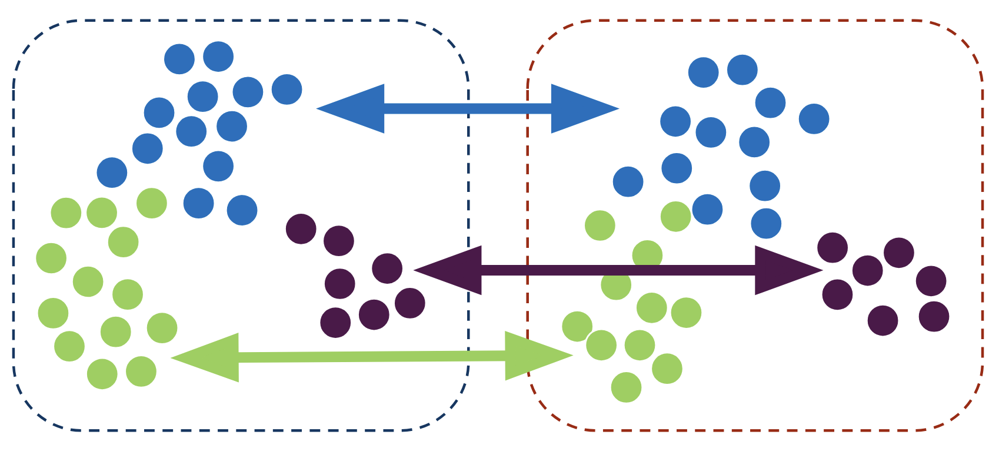

Last updated: 2024-09-26
Checks: 7 0
Knit directory: spatialsnippets/
This reproducible R Markdown analysis was created with workflowr (version 1.7.1). The Checks tab describes the reproducibility checks that were applied when the results were created. The Past versions tab lists the development history.
Great! Since the R Markdown file has been committed to the Git repository, you know the exact version of the code that produced these results.
Great job! The global environment was empty. Objects defined in the global environment can affect the analysis in your R Markdown file in unknown ways. For reproduciblity it’s best to always run the code in an empty environment.
The command set.seed(20231017) was run prior to running
the code in the R Markdown file. Setting a seed ensures that any results
that rely on randomness, e.g. subsampling or permutations, are
reproducible.
Great job! Recording the operating system, R version, and package versions is critical for reproducibility.
Nice! There were no cached chunks for this analysis, so you can be confident that you successfully produced the results during this run.
Great job! Using relative paths to the files within your workflowr project makes it easier to run your code on other machines.
Great! You are using Git for version control. Tracking code development and connecting the code version to the results is critical for reproducibility.
The results in this page were generated with repository version a42f6d3. See the Past versions tab to see a history of the changes made to the R Markdown and HTML files.
Note that you need to be careful to ensure that all relevant files for
the analysis have been committed to Git prior to generating the results
(you can use wflow_publish or
wflow_git_commit). workflowr only checks the R Markdown
file, but you know if there are other scripts or data files that it
depends on. Below is the status of the Git repository when the results
were generated:
Ignored files:
Ignored: .Rhistory
Ignored: .Rproj.user/
Ignored: analysis/e_neighbourcellchanges.nb.html
Ignored: analysis/glossary.nb.html
Ignored: renv/library/
Ignored: renv/staging/
Note that any generated files, e.g. HTML, png, CSS, etc., are not included in this status report because it is ok for generated content to have uncommitted changes.
These are the previous versions of the repository in which changes were
made to the R Markdown (analysis/e_DEWithoutReps.Rmd) and
HTML (docs/e_DEWithoutReps.html) files. If you’ve
configured a remote Git repository (see ?wflow_git_remote),
click on the hyperlinks in the table below to view the files as they
were in that past version.
| File | Version | Author | Date | Message |
|---|---|---|---|---|
| Rmd | a42f6d3 | swbioinf | 2024-09-26 | wflow_publish("analysis/e_DEWithoutReps.Rmd") |
| html | 2b1c8e2 | swbioinf | 2024-09-19 | Build site. |
| Rmd | 511594f | swbioinf | 2024-09-19 | wflow_publish("analysis/") |
| html | e7a4c12 | Sarah Williams | 2023-10-18 | Build site. |
| Rmd | 507ead4 | Sarah Williams | 2023-10-18 | wflow_publish("analysis/") |
| Rmd | 584cf73 | Sarah Williams | 2023-10-17 | adding |
| html | 584cf73 | Sarah Williams | 2023-10-17 | adding |
Sometimes there are no biological replicates, yet you still want to make a comparison. While not ideal, its possible. Individual cells may be treated as ‘replicates’ to explore the difference between two samples.

This requires:
For example:
Steps:
Caveat on 1 vs 1 comparisons!
Essentially the results we get will be testing the difference between this specific sample and that specific sample. The p-values for such a test can be very significant!
We cannot claim for certain these results generalise to other samples, but they’re likely good candidates for further work!
But what about pooled samples?
Note that ‘pooling’ multiple unlabelled biological samples before library prep will still count as ‘one’ replicate no many how many samples are in the pool - because we have no way to tell what sample a cell comes from. A change in gene expression could be from a single outlier sample.
NB: Using cell hashing approaches to tag samples before pooling avoids this issue.
Data from paper Forming nephrons promote nephron progenitor maintenance and branching morphogenesis via paracrine BMP4 signalling under the control of Wnt4 (Moreau et al. 2023)
This study included 10X chromium single cell RNAseq data from 4 conditions, with 3-4 E14.5 mice pooled per group.
In that paper they explain that complete or conditional homozygous knockout of Wnt4 gene results in abnormal kidney development, and they use scRNAseq data to explore effects at cellular level. (Moreau et al. 2023)
In this vignette, we will test for differential expression in each cell type for two 1 vs 1 comparisons:
library(Seurat)
library(edgeR)
library(limma)
library(DT)
library(tidyverse)
dataset_dir <- '~/projects/spatialsnippets/datasets'
seurat_file <- file.path(dataset_dir, 'Wnt4KO_Moreau2023', "Wnt4KOE14.5_11_ss.rds")
so <- readRDS(seurat_file)select(so@meta.data, sample, Genotype, GTeffect, GTshort) %>%
as_tibble() %>%
group_by( sample, Genotype, GTeffect, GTshort) %>%
summarise(num_cells=n(), .groups = 'drop') %>%
DT::datatable()A minimum-counts-per-cell threshold was already applied to this dataset (during preprocessing) so nothing to do here.
# This is plenty
min(so$nCount_RNA)[1] 1456How many cells are there for each celltype for each sample? If there are too few on either side of the contrast, we won’t be able to test.
How many is too few? 50 might be a good threshold. In this case however, we might consider being very permissive and allowing just 20 cells to look at some celltypes that are clearly reduced or increased in number between conditions (e.g. c9,c10,c11) They’re interesting in this experiment, but have to keep in mind during interpretation that results may be less reliable.
Using the ‘GTshort’ annotation for our sample names.
We will apply that filter when running the differential expression.
min_cells_per_group <- 20 # used later
table(so$CelltypeCode, so$GTshort)
Wnt4FloxHet Wnt4FloxKO Wnt4Het Wnt4KO
c0: Blood 1531 567 2597 189
c1: Stroma 553 2014 750 130
c2: High Mitochondria - Non Wnt4KO 868 678 1353 69
c3: NP 587 1225 684 376
c4: Stroma 403 1088 435 283
c5: Stroma 283 587 339 511
c6: Stroma 343 841 391 32
c7: Stroma 326 672 242 330
c8: Immune 408 701 228 144
c9: Stroma - Wnt4KO 33 41 23 1383
c10: UE - Cortical 325 408 345 35
c11: UE - Tip 251 466 307 47
c12: Stroma 189 658 177 28
c13: Vasculature 295 245 227 22
c14: High Mitochondria 125 16 140 381
c15: Podocyte 61 65 49 110
c16: Blood 171 28 8 9
c17: Stroma 21 94 13 17
c18: Immune 29 59 24 6
c19: UE - Medullary 34 58 8 1Talk about options. …
# Set threhoehsolds
min_cells_per_group <- 20
# Calculate DE across every celltype
# Empty list to collect results
de_result_list <- list()
de_result_sig_list <- list()
# the contrasts
# If we store them in a list we can give the nice names
contrast_list <- list( # 'Test' vs 'control'
FloxWnt4KOvsFloxHet = c('Wnt4FloxKO', 'Wnt4FloxHet' ) ,
TotalWnt4KOvsHet = c('Wnt4KO', 'Wnt4Het' ) )
## Or you could autogenerated them
#make_contrast_name <- function(contrast_parts){ paste0(contrast_parts[1],"vs",contrast_parts[1])}
#contrast_names <- sapply(FUN=make_contrast_name, X=contrast_list)
#names(contrast_list) <- contrast_names
# note keeping all 4 samples before two contrasts. (actually does that matter)
#the_celltype = 'c15: Podocyte'
#the_celltype = "c16: Blood"
#contrast_name <- 'TotalWnt4KOvsHet'
for (the_celltype in levels(so$CelltypeCode)[5:7]) {
# Subset to one cell type.
print(the_celltype)
so.this <- subset(so, CelltypeCode == the_celltype)
# count how many cells within each sample (GTshort)
# And list which samples have more than the minimum
cells_per_sample <- table(so.this$GTshort)
print(cells_per_sample)
samples_with_enough_cells <- names(cells_per_sample)[cells_per_sample > min_cells_per_group]
# SUbset to only those samples (might be all cells, might be no cells)
so.this <- subset(so.this, GTshort %in% samples_with_enough_cells)
# For each listed contrast, do both sides of the contrast have enough cells?
# This is of course much simpler if you only have one contrast!
for (contrast_name in names(contrast_list)) {
# from mycontrastname pull out list of the two samples involved;
# c('test', 'control')
contrast <- contrast_list[[contrast_name]]
# Only run this contrast if both sides pass!
if (all(contrast %in% samples_with_enough_cells)) {
print(contrast_name)
# We need to tell Seurat to group by _sample_ not cluster.
Idents(so.this) <- so.this$GTshort
de_result <- FindMarkers(so.this,
ident.1 = contrast[1],
ident.2 = contrast[2],
slot = 'data',
test.use = "wilcox", # the default
min.pct = 0.01, # Note
max.cells.per.ident = 100 # 1000 # if you have really big clusters, set this to subsample!
)
# It can be helpful to know the average expression of a gene
# This will give us the average (per cell) within this celltype.
avg_expression <- rowMeans(GetAssayData(so.this, assay = 'SCT', layer="data"))
de_result.formatted <- de_result %>%
rownames_to_column("target") %>%
mutate(contrast=contrast_name,
celltype=the_celltype,
avg_expression=avg_expression[target]) %>%
select(celltype,contrast,target,avg_expression, everything()) %>%
arrange(p_val)
# Filter to just significant results, optionally by log2FC.
de_result.sig <- filter(de_result.formatted,
p_val_adj < 0.01,
abs(avg_log2FC) > log2(1.5) )
# Record these results in a list to combine
full_name <- paste(contrast_name, the_celltype)
de_result_list[[full_name]] <- de_result.formatted
de_result_sig_list[[full_name]] <- de_result.sig
}
}
}[1] "c4: Stroma"
Wnt4FloxHet Wnt4FloxKO Wnt4Het Wnt4KO
403 1088 435 283
[1] "FloxWnt4KOvsFloxHet"
[1] "TotalWnt4KOvsHet"
[1] "c5: Stroma"
Wnt4FloxHet Wnt4FloxKO Wnt4Het Wnt4KO
283 587 339 511
[1] "FloxWnt4KOvsFloxHet"
[1] "TotalWnt4KOvsHet"
[1] "c6: Stroma"
Wnt4FloxHet Wnt4FloxKO Wnt4Het Wnt4KO
343 841 391 32
[1] "FloxWnt4KOvsFloxHet"
[1] "TotalWnt4KOvsHet"# Join together results for all celltypes, and pull out those with a singificant adjusted p-value
de_results_all <- bind_rows(de_result_list)
de_results_sig <- bind_rows(de_result_sig_list)Check out the full set of significant DE genes
DT::datatable(de_results_sig)Save the results.
# Save the full set of results as a tab-deliminated text file.
# This is useful for parsing later e.g. for functional enrichment
write_tsv(x = de_results_all, "~/myproject/de_results_all.tsv")
# If you don't have too many contrasts and celltypes,
# you can save it as an excel file, with each contrast in a seprate tab.
library(writexl)
write_xlsx(de_result_list, "~/myproject/de_results_all.xlsx")
write_xlsx(de_result_sig_list, "~/myproject/de_results_sig.xlsx")Copy and paste this bit into your own script to adapt to your own data. Make as generic as possible, just a framework.
# This code does not run# Display results table of statsHave a dot point list of what every field in the default output is. Refer to docs wherever possible.
List of useful resources. Papers, vignettes, pertinent forum posts
Wnt4 KO in developing mouse kidney - 10X Chromium scRNAseq: Forming nephrons promote nephron progenitor maintenance and branching morphogenesis via paracrine BMP4 signalling under the control of Wnt4 (Moreau et al. 2023) : The paper with this data.
Seurat Differential Expression Vignette : How to do differential expression with the seurat package. Tells you how to use the multiple statistical tests that seurat offers.
OSCA Differntial Expression: The excellent book Orchestrating single cell analysis includes a section on differential expression, it focusses on pseuboulk approaches with replicates (which can’t be used for a 1 vs 1) using the bioconductor toolkit, but provides useful background.
sessionInfo()R version 4.3.2 (2023-10-31)
Platform: x86_64-pc-linux-gnu (64-bit)
Running under: Ubuntu 22.04.4 LTS
Matrix products: default
BLAS: /usr/lib/x86_64-linux-gnu/openblas-pthread/libblas.so.3
LAPACK: /usr/lib/x86_64-linux-gnu/openblas-pthread/libopenblasp-r0.3.20.so; LAPACK version 3.10.0
locale:
[1] LC_CTYPE=en_AU.UTF-8 LC_NUMERIC=C
[3] LC_TIME=en_AU.UTF-8 LC_COLLATE=en_AU.UTF-8
[5] LC_MONETARY=en_AU.UTF-8 LC_MESSAGES=en_AU.UTF-8
[7] LC_PAPER=en_AU.UTF-8 LC_NAME=C
[9] LC_ADDRESS=C LC_TELEPHONE=C
[11] LC_MEASUREMENT=en_AU.UTF-8 LC_IDENTIFICATION=C
time zone: Etc/UTC
tzcode source: system (glibc)
attached base packages:
[1] stats graphics grDevices datasets utils methods base
other attached packages:
[1] lubridate_1.9.3 forcats_1.0.0 stringr_1.5.1 dplyr_1.1.4
[5] purrr_1.0.2 readr_2.1.5 tidyr_1.3.1 tibble_3.2.1
[9] ggplot2_3.5.0 tidyverse_2.0.0 DT_0.33 edgeR_4.0.16
[13] limma_3.58.1 Seurat_5.1.0 SeuratObject_5.0.2 sp_2.1-3
[17] workflowr_1.7.1
loaded via a namespace (and not attached):
[1] RColorBrewer_1.1-3 rstudioapi_0.16.0 jsonlite_1.8.8
[4] magrittr_2.0.3 spatstat.utils_3.0-4 rmarkdown_2.26
[7] fs_1.6.3 vctrs_0.6.5 ROCR_1.0-11
[10] spatstat.explore_3.2-7 htmltools_0.5.8.1 sass_0.4.9
[13] sctransform_0.4.1 parallelly_1.37.1 KernSmooth_2.23-22
[16] bslib_0.7.0 htmlwidgets_1.6.4 ica_1.0-3
[19] plyr_1.8.9 plotly_4.10.4 zoo_1.8-12
[22] cachem_1.0.8 whisker_0.4.1 igraph_2.0.3
[25] mime_0.12 lifecycle_1.0.4 pkgconfig_2.0.3
[28] Matrix_1.6-5 R6_2.5.1 fastmap_1.1.1
[31] fitdistrplus_1.1-11 future_1.33.2 shiny_1.8.1.1
[34] digest_0.6.35 colorspace_2.1-0 patchwork_1.2.0
[37] ps_1.7.6 rprojroot_2.0.4 tensor_1.5
[40] RSpectra_0.16-1 irlba_2.3.5.1 crosstalk_1.2.1
[43] progressr_0.14.0 timechange_0.3.0 fansi_1.0.6
[46] spatstat.sparse_3.0-3 httr_1.4.7 polyclip_1.10-6
[49] abind_1.4-5 compiler_4.3.2 withr_3.0.0
[52] fastDummies_1.7.3 MASS_7.3-60.0.1 tools_4.3.2
[55] lmtest_0.9-40 httpuv_1.6.15 future.apply_1.11.2
[58] goftest_1.2-3 glue_1.7.0 callr_3.7.6
[61] nlme_3.1-164 promises_1.2.1 grid_4.3.2
[64] Rtsne_0.17 getPass_0.2-4 cluster_2.1.6
[67] reshape2_1.4.4 generics_0.1.3 gtable_0.3.4
[70] spatstat.data_3.0-4 tzdb_0.4.0 hms_1.1.3
[73] data.table_1.15.4 utf8_1.2.4 spatstat.geom_3.2-9
[76] RcppAnnoy_0.0.22 ggrepel_0.9.5 RANN_2.6.1
[79] pillar_1.9.0 spam_2.10-0 RcppHNSW_0.6.0
[82] later_1.3.2 splines_4.3.2 lattice_0.22-6
[85] renv_1.0.5 survival_3.5-8 deldir_2.0-4
[88] tidyselect_1.2.1 locfit_1.5-9.9 miniUI_0.1.1.1
[91] pbapply_1.7-2 knitr_1.45 git2r_0.33.0
[94] gridExtra_2.3 scattermore_1.2 xfun_0.43
[97] statmod_1.5.0 matrixStats_1.2.0 stringi_1.8.3
[100] lazyeval_0.2.2 yaml_2.3.8 evaluate_0.23
[103] codetools_0.2-20 BiocManager_1.30.22 cli_3.6.2
[106] uwot_0.1.16 xtable_1.8-4 reticulate_1.35.0
[109] munsell_0.5.1 processx_3.8.4 jquerylib_0.1.4
[112] Rcpp_1.0.12 globals_0.16.3 spatstat.random_3.2-3
[115] png_0.1-8 parallel_4.3.2 dotCall64_1.1-1
[118] listenv_0.9.1 viridisLite_0.4.2 scales_1.3.0
[121] ggridges_0.5.6 leiden_0.4.3.1 rlang_1.1.3
[124] cowplot_1.1.3